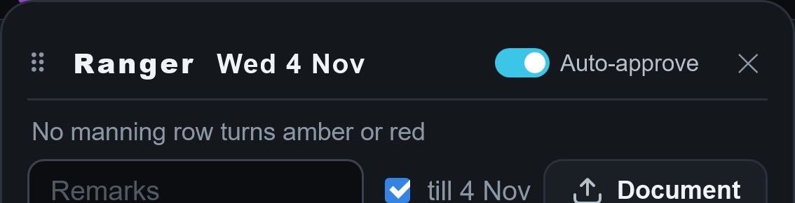
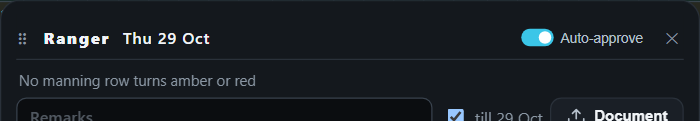

<title>Approvals vs Drawings</title>
<meta name="claude:viewport-fit-sides" content="cover">
<style>
/* Layout: one reading column; each difference a card — its question, the recommendation, the pair of pictures (tap to enlarge). */
:root {
  --bg: #f3f5f8; --surface: #ffffff; --fg: #141821; --muted: #5a6475; --edge: #d9dee7;
  --accent: #0e8fb0; --keep: #6b52c9; --back: #0e8a5a; --warn: #b5560f;
  --f-body: "Segoe UI", system-ui, -apple-system, "Helvetica Neue", Arial, sans-serif;
  --f-num: ui-monospace, "Cascadia Mono", Menlo, Consolas, monospace;
}
@media (prefers-color-scheme: dark) { :root:not([data-theme="light"]) {
  --bg: #0d1016; --surface: #161b24; --fg: #e8ecf2; --muted: #98a2b3; --edge: #2a3240;
  --accent: #3cc6e8; --keep: #a996ff; --back: #4fd08f; --warn: #f0a35a; color-scheme: dark } }
:root[data-theme="dark"] {
  --bg: #0d1016; --surface: #161b24; --fg: #e8ecf2; --muted: #98a2b3; --edge: #2a3240;
  --accent: #3cc6e8; --keep: #a996ff; --back: #4fd08f; --warn: #f0a35a; color-scheme: dark }
body { background: var(--bg); color: var(--fg); font-family: var(--f-body); font-size: 15px; line-height: 1.5;
  padding-left: max(16px, env(safe-area-inset-left, 0px)); padding-right: max(16px, env(safe-area-inset-right, 0px)); padding-block: 20px 48px }
main { max-width: 860px; margin: 0 auto; display: grid; gap: 28px }
h1 { font-size: 24px; margin: 0; text-wrap: balance }
h2 { font-size: 18px; margin: 0 0 4px; text-wrap: balance }
h3 { font-size: 16px; margin: 0; text-wrap: balance }
p { margin: 0 }
.lede { color: var(--muted); max-width: 65ch }
.todo { background: var(--surface); border: 1px solid var(--edge); border-radius: 12px; padding: 16px; display: grid; gap: 10px }
.todo ol { margin: 0; padding-left: 22px; display: grid; gap: 4px }
.todo a { color: var(--accent) }
section { display: grid; gap: 14px }
.card { background: var(--surface); border: 1px solid var(--edge); border-radius: 12px; padding: 14px; display: grid; gap: 10px; min-width: 0 }
.card .head { display: flex; gap: 10px; align-items: baseline; flex-wrap: wrap }
.num { font-family: var(--f-num); font-weight: 700; color: var(--accent); font-variant-numeric: tabular-nums }
.rec { font-size: 13px; font-weight: 700; padding: 2px 9px; border-radius: 999px; border: 1.5px solid currentColor; white-space: nowrap }
.rec.back { color: var(--back) } .rec.keep { color: var(--keep) } .rec.fix { color: var(--warn) }
.why { color: var(--muted); font-size: 14px; max-width: 70ch }
.pic { display: block; border-radius: 8px; overflow: hidden; border: 1px solid var(--edge); background: #0c0d10; cursor: zoom-in }
.pic img { display: block; width: 100%; height: auto }
.pic:focus-visible { outline: 3px solid var(--accent); outline-offset: 2px }
.match { color: var(--muted); font-size: 14px }
dialog { border: 0; padding: 0; background: transparent; max-width: 100vw; max-height: 100vh }
dialog::backdrop { background: rgba(0,0,0,.85) }
dialog img { max-width: 96vw; max-height: 92vh; display: block; border-radius: 6px }
dialog .close { position: fixed; top: calc(10px + env(safe-area-inset-top, 0px)); right: calc(12px + env(safe-area-inset-right, 0px));
  font-size: 15px; padding: 8px 14px; border-radius: 8px; border: 0; background: #ffffff; color: #141821; cursor: pointer }
</style>
<main>
  <header style="display:grid;gap:8px">
    <h1>Leave War Approvals: the night of 27–28 Oct</h1>
    <p class="lede">Every answer you gave is built and checked, and your iPhone check passed. Nothing is waiting on you except "merge live". Tap a picture to see it full size.</p>
  </header>

  <div class="todo">
    <h2>What I need from you</h2>
    <p>Nothing more to answer. When you're happy, say "merge live" and M4 goes to the live app.</p>
  </div>

  <section>
    <h2>Built this morning (your answers and your video)</h2>
    <article class="card"><div class="head"><span class="num">24</span><h3>The ring on the day you jump to is cyan</h3></div><p class="why">It matches the date ringed above it (your D1449). The Scheduler Board and the Inputs pages keep the app's blue.</p><button class="pic" type="button" aria-label="Enlarge: cyan ring"></button></article>
    <article class="card"><h3>Your bell says when someone changes your bid's kind</h3><p class="why">Your D1460: an admin changing a member's pending LL to OL now tells him: "LL bid changed to OL". His own change tells nobody, and an Undo takes the unread line.</p><button class="pic" type="button" aria-label="Enlarge: bell"></button></article>
    <article class="card"><div class="head"><span class="num">26 · 27</span><h3>The title: its day brighter, the switch "Auto-approve"</h3></div><p class="why">Your answers (D1462, D1463). The day is the size of the name, in white, in every window opened on a leave's day or dates. The admin's switch reads "Auto-approve" and does what it always did. Both fit on one line on your iPhone and your PC.</p><button class="pic" type="button" aria-label="Enlarge: phone"></button><button class="pic" type="button" aria-label="Enlarge: desktop"></button></article>
    <p class="match">23 passed on your iPhone: "13–16 Apr ›" and "5 May AM ›" stay on one line. Reading R22 stands (D1464).</p>
    <p class="match">25 decided: version 2 (your D1461). It's filed to build on its own branch once M4 is live, with a full check, because it decides leave.</p>
    <p class="match">Also fixed from your video: OIL from Approvals no longer flashes the grid; the grid comes back drawn after Approvals, never striped; and a period picked on Approvals now lands the grid on that period's first day.</p>
  </section>

  <section>
    <h2>Built tonight (your answers 17–22)</h2>
    <article class="card"><div class="head"><span class="num">20</span><h3>The shorter top of Approvals on a phone, as drawn</h3></div><p class="why">It measures exactly as the drawing: 63 points saved with two months holding requests.</p><button class="pic" type="button" aria-label="Enlarge: top"></button></article>
    <article class="card"><div class="head"><span class="num">21</span><h3>The slim bar in your drawings' darker grey</h3></div><button class="pic" type="button" aria-label="Enlarge: bar phone"></button><button class="pic" type="button" aria-label="Enlarge: bar desktop"></button></article>
    <p class="match">22: "posting out 1 Mar · Overseas Sqn" kept, as you chose.</p>
    <article class="card">
      <div class="head"><span class="num">17</span><h3>The phone's slim bar, back to your drawing</h3></div>
      <p class="why">No cyan outline, "Back ▴" as plain words, a plain ✕, "6 pending" with no dot before it; now the drawing's size and place too (8 points in from each side, 46 tall).</p>
    </article>
    <article class="card">
      <div class="head"><span class="num">18</span><h3>Approve and Refuse in your drawing's letters, on a phone</h3></div>
      <button class="pic" type="button" aria-label="Enlarge: phone buttons"></button>
    </article>
    <article class="card">
      <div class="head"><span class="num">19</span><h3>The changes window's bar on a phone, the same plain look</h3></div>
      <p class="why">"Show ▴" as plain words, a plain ✕. It also read "History on· 0 changes", the space swallowed; now "History on · 0 changes".</p>
      <button class="pic" type="button" aria-label="Enlarge: changes bar"></button>
    </article>
    <article class="card">
      <h3>On a narrow phone, "LOWEST AVAIL" ran into "PLACED"</h3>
      <p class="why">At 360 wide the two headings touched. "LOWEST" now sits over "AVAIL" there; on your phone it stays on one line.</p>
      <button class="pic" type="button" aria-label="Enlarge: headings at 360"></button>
    </article>
  </section>

  <section>
    <h2>Fixed tonight (found by the re-walk and two code reads)</h2>
    <article class="card"><h3>The wrong half of a day decided</h3><p class="why">With a man's afternoon leave already approved, approving his morning and then pressing Refuse or the lit "Approved" changed the afternoon. Both code readers found it. Now only the half you pressed changes, and his bell says the right thing.</p></article>
    <article class="card"><h3>Pick dates… open: a press approved another man's request</h3><p class="why">On a phone, the press closed the calendar, the list moved up, and the line that arrived under your finger was approved. Now a press outside the open calendar only closes it.</p></article>
    <article class="card"><h3>Undo after changing your mind</h3><p class="why">Approve, then Refuse, then Undo left the line showing "Refused" while the leave was approved again. The line now always shows what the leave holds, after every Undo, Redo or change on the grid.</p></article>
    <article class="card"><h3>Posting out: one rule, one reason, everywhere</h3><p class="why">The bid window refused leave after a posting-out date with the wrong reason ("something else is on that time"), and approved what Approvals refused once a posting had run. Every window now refuses alike, with "He posts out on 15 Jan: refuse or delete it".</p></article>
    <p class="match">Also fixed: a finger dragged from the foot of the bell no longer scrolls the page behind; leaving the Leave War from Approvals no longer leaves the grid drawing the whole year in the background; an unread "approved again" line goes with the next Undo; a hand-made command can no longer borrow another bid's "placed" time; when you last opened Approvals is saved under its own name for the database. Each was made to fail by a test first. Three fresh readers then checked the fixes themselves, round by round; one round's fix had reopened the "Pick dates" fault for a tap on the empty space beside the calendar, and that was fixed too. A walker pressed every case by finger.</p>
  </section>
</main>
<dialog id="zoom" aria-label="Picture, full size"><button class="close" type="button" id="zoomClose">Close</button></dialog>
<script>
const dlg = document.getElementById('zoom'), big = document.getElementById('zoomImg')
let opener = null
document.querySelectorAll('.pic').forEach(b => b.addEventListener('click', () => {
  const im = b.querySelector('img'); big.src = im.src; big.alt = im.alt; opener = b
  try { dlg.showModal() } catch (e) { dlg.setAttribute('open', '') }
}))
const shut = () => { dlg.close ? dlg.close() : dlg.removeAttribute('open') }
document.getElementById('zoomClose').addEventListener('click', shut)
dlg.addEventListener('click', e => { if (e.target === dlg || e.target === big) shut() })
dlg.addEventListener('close', () => { if (opener) opener.focus() })
</script>
